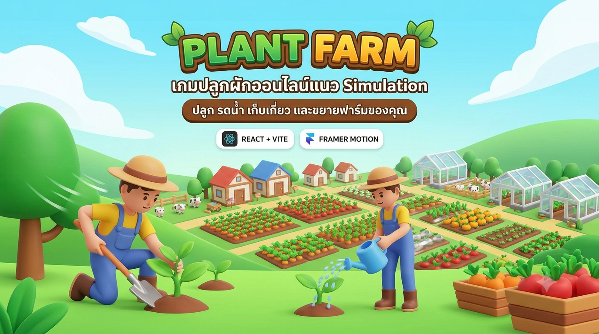
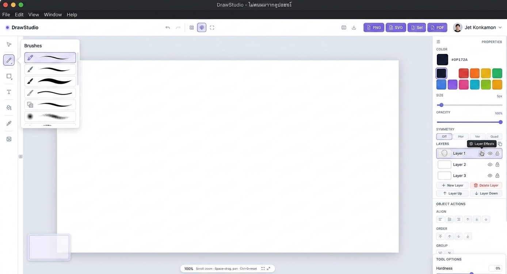

⏳ Render
⏳ Render
02 — โปรเจกต์
ผลงานที่สร้าง
รวมโปรเจกต์ที่ผมสร้าง ตั้งแต่เว็บไซต์ AI ไปจนถึงเกมออนไลน์
⚠️ ทุกโปรเจกต์ยังเป็น Demo อยู่ระหว่างการพัฒนา — ฟีเจอร์ต่าง ๆ อาจยังไม่สมบูรณ์
🎮 เกม 3 โปรเจกต์
⏳ Render


💻 โปรแกรม & เว็บแอป 8 โปรเจกต์
⏳ Render

กำลังพัฒนา ไม่สามารถเปิดดูได้
Portfolio / AI
AI Developer Portfolio
เว็บไซต์พอร์ตโฟลิโอส่วนตัวที่มี AI Chatbot ผู้ช่วย (Gemini), 3D Globe (Three.js), GitHub Contribution Heatmap และ Particle Effects
กำลังพัฒนา ไม่สามารถเปิดดูได้
Enterprise / Full-Stack
Microchip Shuttle Portal
ระบบจัดการรถ shuttle สำหรับพนักงาน Microchip Technology มี 3 บทบาท (Employee/Driver/Admin), แผนที่ Leaflet, Export Excel, รองรับ 2 ภาษา
กำลังพัฒนา ไม่สามารถเปิดดูได้
AI / Computer Vision
โปรแกรมตรวจจับคน
แอปตรวจจับและนับจำนวนคนแบบเรียลไทม์ ใช้ TensorFlow.js + MoveNet MultiPose รองรับทั้งอัปโหลดรูปและกล้องสด
กำลังพัฒนา ไม่สามารถเปิดดูได้
Bot / AI / Automation
Enterprise Telegram AI Bot
บอท Telegram อัจฉริยะ 50+ คำสั่ง รองรับ AI หลายตัว (Gemini, Claude, GPT-4o), RAG Memory, สร้างรูป, วิเคราะห์ PDF, Google Suite integration